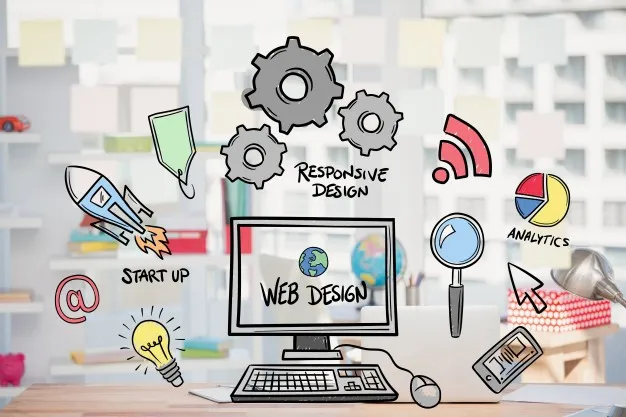

Menu
Berita

Web Design adalah salah satu istilah tentang desain secara visual yang diterapkan kepada media digital yaitu website. Dimana hal ini juga berkaitan dengan apa itu web development, Karena pengembangan sebuah website tidak hanya menuntut fungsionalitas
website tersebut, melainkan kita juga membutuhkan sebuah esensi seni yang disebut design.
Kembali ke tujuan website tersebut dibuat. Tujuan dibuatnya sebuah website tidak lain dan tidak bukan adalah sebagai
salah satu media komunikasi, dimana memang bertujuan untuk membuat atau menyampaikan informasi secara cepat dan realtime.
Membuat desain pada sebuah website memerlukan kemampuan khusus dimana tidak semua orang bisa memberikan
desain unik tanpa menghilangkan fungsi utama dari website tersebut. Seperti yang kita sendiri alami ketika mengunjungi sebuah website, saat mengunjungi sebuah website tentu yang pertama kali kita lihat adalah desain dari website itu
sendiri, baik itu dari komposisi warna sampai tata letak.
Seorang web desainer yang baik adalah mereka yang mengerti akan esensi warna dan memiliki perasaan dalam membayangkan sebagai pembaca atau pengunjung website. Misalnya
saja dalam pemilihan warna. Seorang web designer perlu memperkirakan warna yang menarik namun tetap nyaman dipandang mata. Dan menghindari warna sejenis antara background dengan tulisan.
Bicara tentang web design tentu tidak
akan terlepas dari yang namanya tata letak konten dan gambar. Pemilihan tata letak konten dapat mempengaruhi minat para pengunjung di website yang kalian miliki. Begitu juga dengan gambar. Website modern saat ini sudah sangat kompleks,
dimana sebuah gambar harus juga terlihat menarik dan mendukung dalam komposisi warna atau tema website. Selain itu pemilihan ukuran gambar juga sangat harus diperhatikan. Melihat kembali masalah konektivitas internet yang ada di Indonesia
saat ini, alangkah baiknya menggunakan gambar dengan ukuran yang wajar saja. Pada umumnya kita tidak disarankan untuk memilih atau memasukkan gambar yang memiliki ukuran diatas 300 KB. Karena tentu dengan adanya banyak gambar berukuran
besar akan membuat loading halaman website kita akan semakin berat.
Kesimpulan kali ini tentang pengertian web design adalah istilah dalam pembuatan desain yang berfokus pada tampilan website tanpa menghilangkan fungsi utama
dari website tersebut dan memberikan kenyamanan tambahan pada pembaca atau pengunjung website.
Sumber: https://www.dumetschool.com/blog/pengertian-web-design